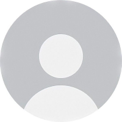

The Medical Physics and Engineering in Radiology (MPER) research group is based at Institute of Diagnostic and Interventional Radiology of the University Hospital Zurich. The group includes researchers from all imaging domains (MRI, Ultrasound, X-Rays/CT) and deals with interdisciplinary aspects of imaging research, including safety and regulatory compliance.
We conduct independent research, support radiological and clinical research, and teach medical and technical students, master students, and Ph.D. students. We provide an interface between vendors and clinical practice and continually advise with regards to image quality and operational safety of our devices.
The MPER team comprises scientific experts from different modalities and healthcare-related disciplines.
Senior researchers
Biomedical & Electrical Engineer
Ultrasound imaging, AI, interdisciplinary research
Medical Physicist
CT/X-Ray imaging, AI, Radiation protection
MRI Physicist
MRI imaging, MRI safety
Biomedical engineer
Ultrasound imaging, optoacustic imaging
Students

Physics
Medicine
Our group conduct several projects in different areas of diagnostic imaging.
Here we will present some of our running and completed projects.
Open positions and thesis offering
We currently don't have any open positions.
Our work is regularly publish in international peer-reviewed journals.
Peer reviewed papers (selection)
Book chapters
Are you a student or researcher and you would you like to get in touch?
Powered by w3.css